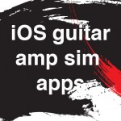
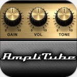
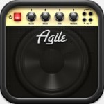
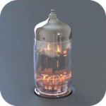

Regular readers of the Music App Blog will know that the only instrument I claim any degree of proficiency upon is the guitar. That means, of course, that when it comes to recording my own music, a lot of it involves guitars and, in particular, electric guitars.
I’ve had a recording tech habit for more years that I care to recall…. and while I’ve been lucky enough to have a recording space for my own use for many of those years, it has very much been a home/project studio environment (up until now actually as I’m just finishing building a dedicated room from scratch that is pretty much soundproofed…. but that’s a different story) where a spare domestic room has been ‘converted’ for recording use.
In the main, there is no great problem with recording in your living room or spare bedroom. Acoustic treatment can be a challenge (but it is in any recording environment) but, with some common sense, it’s possible to get perfectly acceptable results without spending a fortune. However, noise – both coming in from outside and getting out from inside – is more of an issue and electric guitars 9along with drums) can be a pain in the a** to record without seriously damaging relationships with family, neighbours and the local police.
All of which is a round-a-bout way of saying that I embraced virtual guitar rig modelling with open arms at a very early stage in its history. Whether it’s in its hardware form with devices from the likes of Line 6, Roland or Zoom or, in more recent years, software-only versions such as POD Farm, AmpliTube, Guitar Rig and a multitude of others, the convenience, flexibility and price of a virtual guitar rig has made it the method of choice in my own (and many others) home/project studios.
Always wanted a collection of classic guitar amps but can’t afford them? There’s an app for that….
There are ‘cons’ of course; there is something unique about playing in a room through a real valve amp and how it responds that, for some players, modelling doesn’t quite capture. I’m not sure it is anything to really do with the sound (there are a number of ‘A vs B’ sorts of audio demos out there and, through typical monitoring systems, there are plenty of cases where lots of folks (me included) can’t tell the difference between the ‘real’ amp sound and the ‘modelled’ amp sound) but there is something tactile about the response of a real guitar amp/cab as you play and that does influence who you play and how ‘inspiring’ the sensation is (although Line 6 are making plenty of claims that their latest generation of virtual guitar rig modelling as found in the new Helix hardware gets very close to this).
The software-only format of guitar rig modelling has, of course, made its way to iOS. Early versions of some of these modelling apps might now look (and sound) a little past their sell-by date. This is hardly surprising as (a) they were designed to run within the capabilities of early iOS hardware and (b) modelling technology itself is advancing rapidly, more recent versions are perhaps less limited by the processing capabilities of the latest iPads and iPhones. As such, virtual guitar rig software for iOS can produce some very impressive results.
So, if this is a market that you might be interested in dipping your toe (or guitar lead) into, alongside that suitable audio interface between your guitar and iOS hardware, which iOS guitar rig modelling music apps are worth considering? While this list isn’t intended to be exhaustive, let’s round up the more obvious current contenders….. Oh, and I’ve provide links to the full reviews of each app below although do bear in mind that some of these will date back to when the app was originally released so use the site’s search box (located top-right of your screen) if you want to see what developments there might have been since.
The full stacks
Let’s start with a selection of the heavy hitters. This is, of course, a personal selection but I’ve grouped these fours apps as the most obvious choices because (a) they are very good sonically and (b) they are generally being well maintained and come from some of the bigger players.
 BIAS FX
BIAS FX
For some users, BIAS FX from Positive Grid is JamUp Pro v.2 (an earlier amp modelled from PG and very good in its own right) and, while I think that is an argument with some merit, there is no denying that BIAS FX is a heck of an app. There are plenty of virtual guitar rig modellers available under iOS but, in terms of features and sound – and the novel way BIAS FX links with Positive Grid’s BIAS Amp amp design app – BIAS FX is most certainly one of the best options available.
The base app includes more than enough virtual guitar kit to keep you busy and, whether you want ultra-clean or ultra-hi-gain, BIAS FX can do it. You get a selection of different amp types, a similar selection of cabinets and a (virtual) kit bag of stomp box effects. There are, of course, also lots of additional IAPs you can dip into if you want to expand your choices and bass players are also supported with virtual bass kit available.
BIAS FX offers flexible signal chains including a dual chain option.
The BIAS FX interface is pretty slick, allowing you to see a signal chain in the upper portion of the display while tweaking the controls on a selected component in that signal chain in the bottom half of the display. You can change the order of the devices and, very usefully, the app also supports dual signal chains so, if you want to combine two amp/cab/effects chains for a really big sound (or pan them left/right), then you can do that also.
The app includes a tuner, a ‘live view’ for easy preset recall when playing live, is MIDI compatible (so you can use a MIDI footswitch to make changes such as preset selection and, rather helpfully, Positive Grid make just such a controller in the BT-4), supports Audiobus and IAA for linking it with other iOS music apps and works fine under iOS9. The app requires iOS8 or later, is iPad-only and is a 410MB download.
Every guitar player will have their own preferences in terms of sound but, to my ears at least, sound-wise, BIAS FX is at the top of the current iOS guitar rig sim food-chain. The current price is UK£22.99 and, while Positive Grid have had the app on sale at various times, this is still good value for money for what is probably the slickest of the current iOS virtual guitar rigs.
BIAS FX – review
Tonestack
Yonac’s ToneStack provides a pretty similar experience to BIAS FX and, if you have used one app, then the other will soon feel familiar. In essence, therefore, what you get in the base app is quite similar; a core collection of virtual amps, cabs and effects that you can arrange into your own ideal rig, save configurations as presets, and craft your own tones.
Also as with BIAS FX there are IAPs available with extra items of kit and these include two ‘Motherload’ bundles that provide a huge additional range of modelled items. Again, you get dual signal chains if required. ToneStack is, however, both a universal app (it will run on an iPhone as well as an iPad) and is currently priced at just UK£7.99 for the base app.
ToneStack – Yonac’s take on guitar amp modelling.
There is a preset system for storing tones, an ‘onstage’ mode for using the app live (and comprehensive MIDI support if you have a suitable MIDI floorboard hooked into your system to control the app). There is also all the usual extra facilities you might expect given the obvious competition; a tuner, an audio file playback system (the Tapedeck) and a built-in recording feature (inStudio; initially 2 tracks but expandable up to 8 tracks). Audiobus and IAA are also supported and, while the app requires iOS7.1 or later, it does work well under iOS9.
In terms of sound, there is perhaps little to choose between ToneStack and these other big hitters; they al sound good and which you prefer will come down to personal preference. That said, at the current UK£7.99, ToneStack is amazing value for money for the base app and that might well be enough to sway some peoples purchase decision. At this price, however, why restrict yourself to just one amp modelling app?
ToneStack – review
 Mobile POD
Mobile POD
Line 6 are something of a giant when it comes to virtual guitar rig modelling and Mobile POD brings some of that considerable expertise to iOS. The app offers the same sort of virtual kit collection as BIAS FX and ToneStack and, again, you get a virtual signal chain to arrange your devices along. However, there are some notable differences.
First, Mobile POD can be obtained as a ‘free’ app bundled with Line 6’s Sonic Port iOS guitar interfaces. These hardware devices are actually very good in their own right but, if you buy one, you get the app thrown in. However, if you don’t have a Sonic Port, you can buy an IAP for UK£14.99 to ‘unlock’ Mobile POD to use with other audio hardware.
Line 6 Mobile POD; with an IAP, ready for use with any audio hardware.
Second, the app doesn’t include any further IAP content. Instead, you get all the amps, cabs and stomp boxes included from the off and, while the collection may not be quite as extensive as in some other apps, it is still impressive. Indeed, it you have used any other Line 6 guitar modelling stuff, there are models here that will be familiar. I have to admit to be a bit of a Line 6 fan and, while other apps might have some technical features that Mobile POD doesn’t offer (dual signal chains for example), in terms of sound, there is just something about what Line 6 do that, to my ears at least, has a bit of an edge.
The app is universal and also supports Audiobus and IAA. On the downside, there is currently no MIDI support for external control and the app was last updated back in May 2015 (prior to the release of iOS9). It requires iOS8.1 or later but, in fairness to Line 6, the app does seem to work fine under iOS9 and runs quite happily on my iPad Pro test system.
Mobile POD – review
AmpliTube
AmpliTube was one of the first iOS apps I ever purchased so I do have a bit of a soft spot for it. In terms of basic structure, the approach is very similar to that of BIAS FX and ToneStack; there is a base app with a compact collection of amps, cabs and effects that you can mix and match, while you can expand on this collection via a number of IAPs. Some of these IAPs are themed – Slash, Fender, Hendrix bundles exist, for example – and these themed bundles are also available as a separate app if you prefer that route (it means you can run the two apps at the same time).
Technically, the app requires iOS7.1 or later but, within Audiobus, IAA and external control via MIDI all possible, it also runs very smoothly under iOS9. It does come in separate versions for iPad and iPhone though so, if you want to run it on both devices, then you need to buy two separate apps.
AmpliTube 4 – revamped visuals but, more significantly, revamped sound engine.
Other IAPs available include a multitrack recording environment, a virtual drummer and a looper function. These are all good if you don’t already have these options in other, dedicated, iOS music apps. Bass amps are available but, unlike ToneStack and BIAS FX, you can’t run a dual signal chain.
The interface is slightly different to the previous apps but this is cosmetic rather than because of any radical difference in functionality. So, for example, you see your virtual amp at the base of the screen and four ‘effects slots’ at the top, into which you can place a series of effects. As well as these four ‘pre-am’ effects slots, there are also two ‘post-amp’ effects slots. Sound-wise, however, AmpliTube is very good indeed and, at UK£14.99 for the bass app, is good value for money.
AmpliTube – review
Decent combos
If these big four don’t grab you, then there are some other contenders. However, the four apps below, while good in their own right (and in different ways), have perhaps not seen as much development activity over recent months. I’ve no idea whether there is active development on-going so you might consider these as somewhat more speculative purchases. I’ve added a comment or two about their current status under iOS9 in each entry.
AmpKit+
AmpKit+ is produced by Agile Partners (who also make Guitar Toolkit; one of my favourite guitar utility apps). For a while, AmpKit+ battled it out alongside AmpliTube to be the king of the iOS virtual guitar rig market place and the approach is similar to apps such as AmpliTube.
AmpKit’s main tone tweaking screen on the iPad – not too scary for technophobic guitar players.
There is no doubt that the app can produce some good sounds and, at UK£14.99 it is obviously in the same price bracket as the obvious competition with a suitable wide range of extra kit available via IAP The app requires iOS7.1 or later and is universal. Perhaps my only concern is that the most recent update was back in June 2015 (pre- the release of iOS9) so I hope that it is going to continue to get support as the OS itself evolves.
AmpKit+ – review
 Flying Haggis
Flying Haggis
Note every iOS guitar amp sim follows the model provided by BIAS FX, ToneStack, AmpliTube or AmpKit+ however. If you want something a little simpler and more straightforward, then you might consider Flying Haggis. While it is perhaps most obviously aimed at the rock and classic rock player, it sounds great and, because of the ultra-simple interface, is both easy to learn and fun to use. If you crave a simple life, then this would be UK£4.99 well spent.
A quick look at the screenshot included here makes that underlying philosophy obvious. All the controls for the app are contained in a single, very straightforward, screen and the only time you need to leave this page is when you toggle the virtual switch to access the presets; otherwise, what you see is exactly what (all) you get.
Flying Haggis – no, not some mythical Scottish bird – a guitar amp sim from db audioware :-)
While Flying Haggis perhaps lacks some of the bells and whistles of some of the other high profile guitar amp sims under iOS, it makes up for this in terms of ease of use any a very credible classic rock vibe. If you want to keep your guitar amp sim app as simple as possible, then Flying Haggis is well worth a look and, if classic rock tones are your thing, sonically, it has you covered.
The app is iPad only and requires iOS7.0 or later. It works fine under iOS9 (on my test system at least) and includes both Audiobus and IAA support. However, as with AmpKit+, this is an app that has not been updated in a while – October 2014 just after iOS8 was launched – so it probably does come with a slight word of caution.
Flying Haggis – review
Amp ONE
Another streamlined – and alternative – take on the virtual guitar rig is offered by Amp ONE. This app is not attempting to be an all-singing, all-dancing collection of virtual guitar kit. Instead, the focus is on a small collection of amp models (enough to give you a full range of tonal options), easy-to-use cabinet modelling and a few key effects (chorus, delay and reverb).
All of this is also presented in a way that avoids the visual representation of a real amp/cab/stomp box in a graphical form. Aside from a few amp-shaped graphical hints at the basis for each of the amp models (shown in a strip along the top of the display), instead what you get is a simple set of horizontal faders and a few selection buttons and on/off switches, all of which are presented in a fairly modern – and very streamlined – single screen.
Ready to rock? Amp ONE rocks very nicely thank you…
On a technical level, Amp ONE requires iOS 7.0 or later, runs on iPad only and is a 22 MB download. It is currently priced at UK£7.99. Audiobus and IAA support are provided and, while the app was last updated in February 2015, it does seem to work well enough under iOS9.
If you already own a couple of the leading iOS guitar amp sims, then I’m not sure I’d put Amp ONE in the ‘must have’ bracket. It is, however, a very useable app, the interface is easy to use and the tones are very good. If you want an alternative take on the guitar amp sim app, Amp ONE is well worth exploring.
Amp ONE – review
Guitar geek
While one (or three!) of the above ought to give you plenty of choices for guitar tones, if you are really geeky about crafting your sound, then there are two other iOS apps you might wish to consider… and both of them come from Positive Grid. So, if like the idea of building your own (virtual) guitar amp or own (virtual) distortion pedal, read on….
BIAS Amp
BIAS Amp is an amp modelling app but there is a considerable twist. The app is not a full virtual guitar rig; instead, it focuses upon just the amp element of that rig. However, for that element, it allows you to open up the box and stick your (virtual) fingers inside to customise your own amp design.
If this all sounds a bit geeky then, in truth, it is… but for the tone-hound guitar player, it is also a heck of a lot of fun and you can tweak away to build your perfect amp to your hearts content without any danger of explosions or electrocution.
You get more than enough amp design options in BIAS… and all without any danger of actually having to use a soldering iron :-)
However, perhaps the really neat trick is that amps designed within BIS Amp can be exported over to BIAS FX and used within the full virtual guitar rig offered there. At a geeky tone making level, this does give BIAS FX a very interesting feature that is just a bit unique.
The amp building process is also very slick and, while you can tweak away at a component level within your amp model, this is not an app that’s difficult to use or that requires any great technical knowledge of how a real amp works; you just play around until you get something you like.
The app is sold in separate iPhone and iPad versions, requires iOS7.0 or later and is currently priced at UK£14.99. It works fine under iOS9 and, while it is best seem as an add-on to BIAS FX, it does also offer Audiobus and IAA support. One for the real guitar tone-nerds but, if that’s you, it is a heck of a lot of fun.
BIAS Amp – review
 BIAS Pedal
BIAS Pedal
And, if you have read the entry on BIAS Amp, you might already be guessing the basics of BIAS Pedal. Yep, this is a pedal building/designing app – and in this case we are talking about distortion, overdrive and fuzz pedals – and, yep, once designed, you can port the finished pedal over to BIAS FX.
Can you tell the difference that battery/power types make to your pedals? Nope, me neither… but you can experiment with that option in BIAS Pedal if you wish.
The concept is the same as BIAS Amp and the execution just as slick. If anything, it is perhaps an even more specialist app choice than BIAS Amps but, with your geek hat on, it is also a lot of fun. The app itself is a free download so you can try the features out. However, a UK£14.99 IAP is required to unlock the full feature set and get things fully working with BIAS FX. The app requires iOS7.0 or later, works fine under iOS9 and is iPad-only.
BIAS Pedal – review
In summary
I’ve been playing the guitar long enough to know that one players tone Nirvana is another’s bee-in-a-bottle. It is, therefore, difficult to make a recommendation as to the ‘best’ iOS guitar amp sim out of these various contenders. I can tell you what I turn to most often at a personal level though – BIAS FX (plus BIAS Amps) and Mobile POD – but feel free to take this with the appropriate pinch of salt.
I use the former because I think the overall design – and that hook-up with BIAS Amp – is just very cool, while I use the latter because I’m a long-standing Line 6 user and the tones just grab me. However, any of the main contenders have their merits and if I was looking for an all-round compromise between features, sound and price, I think ToneStack is hard to beat for the base app.
In the end, guitar tone is such a personal thing but, one of the beauties of the world of iOS music making is that, compared to desktop software prices, all these apps (in their base forms at least) are as cheap as chips. Stumping up for two or three alternatives is therefore not beyond the bounds of possibility.
Anyway, whichever way to jump, get ready to rock…. iOS has a crop of very respectable virtual guitar rig choices for you to select from.


{kind=link}
{kind=link}
{kind=link}
{kind=link}
{kind=link}
{kind=link}
{kind=link}
{kind=link}
{kind=link}
{kind=link}
{kind=link}
{kind=link}
{kind=link}
{kind=link}
{kind=link}
{kind=link}
Great writeup, thanks John!
I was wondering, what’s your take on the guitar amp and effects modelling built into GarageBand, compared to these apps?
Thanks!
Hmm. You may have just sold me on Bias Pedal…
I think it would be good to speak a little about performance too – how these apps perform if you’re actually trying to use them as an amp +FX replacement. my Ipad is not the latest (4th gen) but has been a very effective music producing machine until I tried (and paid for) Bias FX – I can’t do anything ‘fun’ with it, unless I increase the latency setting so much that I can’t play it anymore.
Mobile POD – I have used Line6 amp simulators (hardware and software) for many years now, but the app really loses it’s value as there’s no remote control function. I’m assuming any guitarist these days will want to switch sounds without the need to stop playing, right? the fact that mobile POD has no (midi) remote control is just strange. Unless they don’t really want it to compete with their hardware.
Jamup -I used Jamup at a few gigs – it’s good and simple to use, with live usage quite well thought out, but to me the sound is not the best.
For now ToneStack is my favourite – it sounds good, and, very importantly, doesn’t use as many resources as BIAS so you can play with low latency. (correction: you can _play_)
Using few resources is not just relevant if you’re on an older Ipad – it’s also relevant if you’re on the latest, because sooner or later you’ll want to run other apps at the same time. more FX, background tracks, recording..
Hi Bas…. many thanks for taking the time to share your experiences here…. much appreciated by me and I’m sure helpful to others. Best wishes,
John
Thanks for the run-down on all these amps. No matter what you think of the various pricing strategies of these developers, any one of these solutions is a heck of a deal price-wise once you’ve gotten over the hump of an iPad, a guitar interface and a guitar. I have an amp sitting in the basement that I’m about ready to throw up on Craigslist (not sure if you have that in the UK) to some budding young guitarist for cheap money. I just can’t believe the sounds you can get for a fraction of the cost — and since I am always playing through headphones to keep the Mrs. happy anyway, might as well do it through an iPad.
My app of choice is Tone Stack with the Motherload 2.0 IAP. Cheers.
Great roundup, John – really helpful snapshot of the current options available to the iOS guitarist. I recently purchased a Line 6 Sonic Port VX, so I now have the mobilePOD app available. Your comments piqued my interest, so I may need to go exploring.
Just wanted to put in a shout for JamUp Pro – It also integrates with BIAS amp, and allows for downloading modded amps from their “tonecloud.” I have a few favorite amp models I’ve purchased, created and/or discovered. Their Blueline Ampeg amp IAP provides a very satisfying bass thug, I found a nice hotrodded Marshall cab for my metal tones on their tonecloud, shimmery clean tones via the app’s Fender Twin counterpart, and built the mother of all acoustic bass amps using a MusicMan 8×10 cab and a souped-up Frankenstein head, both configured in BIAS Amp.
I know Positive Grid would like me to up my game and jump up to Bias FX, but I’m very happy with the sounds and rigs I get with JamUp, and it all incorporates nicely with my IK Blueboard and Moog Expression Pedal. So I’m staying put for now (occasional foray into mobilePOD aside) until push comes to shove – i.e., PG drops support of JamUp – which I hope is still a ways off in the future :)
Hope you’ll be sharing some fresh tones from the new studio soon – Cheers!!
~Sean
Thanks John for your great overview of existing apps!
I just bought an iTrack Dock was wondering, if it can replace my Line 6 Pod HD 500. Unfortunately it can’t ;)
It looks I like the Line 6 sound as some others do . I compared my Pod HD 500 to NI Guitar Rig and 3 guitar apps for the iPad. I mostly use clean/crunchy sounds, and I especially like the VOX model to create that tone, so I compared the Line 6 VOX with Guitar Rig, BIAS FX, Amplitude and Mobile Pod. No one of the other apps could deliver what the POD does: It gives you incredible feedback of how you “attack” the strings – if you treat them hard, it sounds different to when you treat them softly – that’s how it should be, that’s why we love tube amps!
Amplitude could deliver a good “VOX” sound, but the number of effects is disappointing, no Reverb, what? Then I bought Bias Amp to pimp the VOX sound of Bias FX. I think it got more into the direction I wanted it to sound, but to be honest, I rather did not know, what I was doing. Unfortunately Line 6’s Mobile POD is rather disappointing compared to their (PRO) hardware. The possibilities are limited and the sounds are weak. If Line 6 would transport the quality of the sounds of the Pod HD 500 to an iPad app, THIS would be an instant buy!
Hi Oliver…. guitar amp/rig modelling – and the comparison with the ‘real deal’ (mostly valve) amps the models are based upon – is an interesting topic. There is loads of stuff on YouTube in this area including lots of folks comparisons models vs real amps and comparing different forms of modeller to see (hear) which sounds best…. Anyway, without wishing to add to the confusion, at some point in the not too distant future, I’d love to do an audio comparison between (a) the various iOS amp modellers, (b) iOS software vs desktop software, (c) iOS modellers and high-end hardware modellers (e.g. the Line 6 Helix), (d) modelling software vs dedicated modelling amps and (e) any form of modelling vs a tube amp or two…. And round it all off with a ‘blind test’…. just various audio clips that could have been produced with any of this technology and see what folks think they can hear…. In a recording context, I don’t think the majority of listeners would be able to reliably play ‘spot the valve amp’. However, as a player, when ‘in the room’ with a valve amp and a modelling device (of any sort) then maybe it’s easier to identify exactly what’s what? And part of that is certainly the detail of the response you get to different playing dynamics….
Of the various iOS sims, I tend to stick with BIAS FX and Mobile POD. I like the geeky side of the BIAS FX/BIAS Amp combination and I’ve always been a fan of Line 6 stuff (which would not do my credibility with some of the YouTube metal crowd much good as there do seem to be a lot of folks who are not such fans)….
Anyway, good luck with your tone hunt for that perfect iOS ‘Vox’ sound…. very best wishes, John